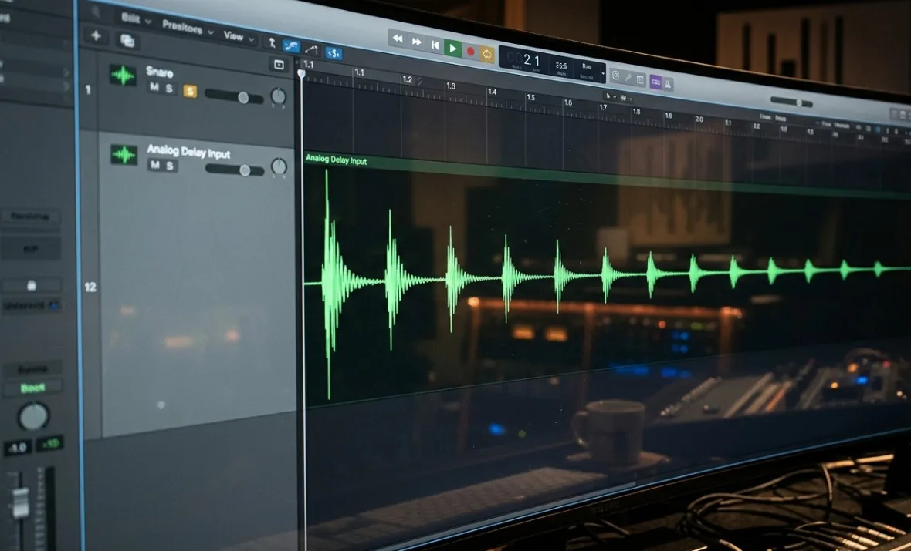
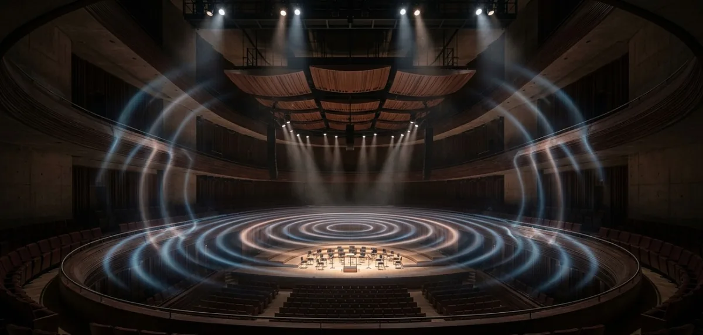
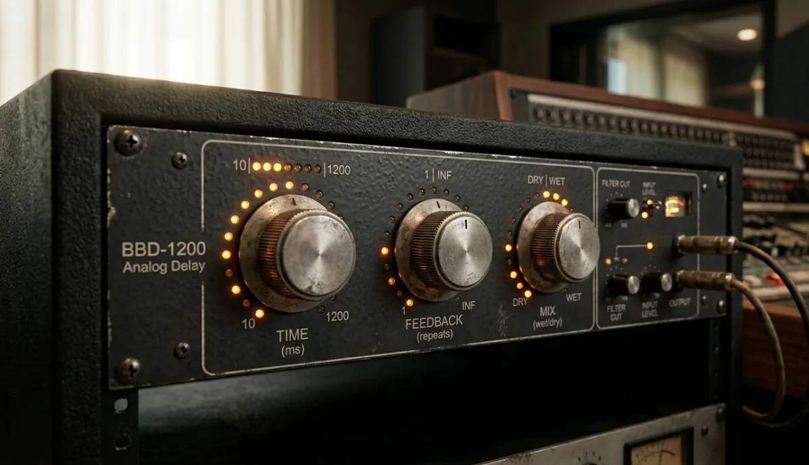

Czym jest reverb?
Reverb (pogłos) to efekt dźwiękowy odwzorowujący naturalne odbicia dźwięku od powierzchni w pomieszczeniu. Kiedy mówisz w dużej sali, twój głos odbija się od ścian, podłogi i sufitu - i te wszystkie odbicia docierają do uszu ułamki sekund po oryginalnym dźwięku. To właśnie słyszysz jako pogłos.
W produkcji muzycznej reverb spełnia dwa zadania. Po pierwsze - umieszcza dźwięk w przestrzeni: wokal z dużym pogłosem brzmi jakby był nagrany w katedrze, a perkusja z krótkim roomem - jakby stała w małym, suchym studiu. Po drugie - skleja elementy miksu: wspólny reverb na kilku instrumentach sprawia, że brzmią jak nagrane razem, w tym samym miejscu.
Bez pogłosu muzyka brzmi pusto i nienaturalnie - ucho ludzkie jest przyzwyczajone do tego, że każdy dźwięk istnieje w jakiejś przestrzeni. Całkowicie suchy miks (bez reverbu) często robi wrażenie klinicznego i zimnego, chyba że to świadomy zabieg estetyczny.
Rodzaje reverbu
Nie każdy pogłos brzmi tak samo - różne algorytmy i technologie dają bardzo różne efekty. To co wybierzesz, zależy od stylu muzyki i od tego, co chcesz osiągnąć w miksie.
Room - najkrótszy i najbardziej naturalny. Symuluje małe lub średnie pomieszczenie. Świetny do perkusji i instrumentów, które mają brzmieć blisko i naturalnie. Dodaje powietrza bez wyraźnego pogłosu.
Hall - duże pomieszczenie koncertowe lub kościół. Długi, gęsty ogon reverbu. Klasyczny wybór dla strun, chórów i patetycznych wokali. Może łatwo zamulić miks - używaj ostrożnie.
Plate - oryginalnie duża metalowa płyta w studiu, która wibruje i wytwarza charakterystyczny, gęsty ale relatywnie krótki pogłos. Ulubieniec przy wokalu popowym i werblu. Brzmi bardziej muzycznie niż naturalnie.
Spring - symulacja sprężynowego reverbu ze wzmacniaczy gitarowych. Charakterystyczne, lekko metaliczne brzmienie. Niezbędny w muzyce surf, rockabilly i reggae.
Shimmer - reverb z dodanym pitchshiftingiem (przesunięciem wysokości dźwięku), daje efekt niebiański, rozciągnięty. Popularny w ambient i post-rocku.

Czym jest delay?
Delay (echo) to efekt polegający na opóźnieniu sygnału audio i odtworzeniu go po określonym czasie - raz lub wielokrotnie, zazwyczaj z każdym powtórzeniem cichszym od poprzedniego. Najprostszy przykład: krzyczysz w góry i słyszysz echo - jeden, dwa, trzy razy, coraz ciszej.
Delay jest bardziej rytmiczny i kontrolowalny niż reverb. Możesz zsynchronizować go z tempem utworu (np. powtórzenie co ćwierćnutę), przez co staje się elementem rytmicznym, a nie tylko przestrzennym. To jeden z powodów, dla których delay jest bardziej muzyczny niż reverb - jego powtórzenia mogą aktywnie współgrać z groovem kawałka.
Rodzaje delaya
Slapback delay - bardzo krótkie, pojedyncze powtórzenie (50-150 ms), bez dalszego echa. Klasyk przy wokalu rockabilly i country z lat 50. Daje wrażenie grubszego dźwięku bez wyraźnego efektu echa.
Tape delay - symulacja magnetofonowego opóźnienia. Charakterystyczna, lekko rozmyta barwa z naturalnym pitch wanderingiem (mikroodchyleniami wysokości). Ciepłe, organiczne brzmienie. Popularne w dub, reggae i psychodelicznym rocku.
Ping-pong delay - powtórzenia przeskakują naprzemiennie między lewym a prawym kanałem stereo. Tworzy efekt przestrzenny i ruchomy. Świetny przy wokalu i gitarach w muzyce pop i elektronicznej.
Tempo-synced delay - powtórzenia zsynchronizowane z BPM utworu. Ustawiasz wartość nutową (ćwierćnuta, ósemka, trójkowa ósemka) i delay automatycznie liczy czas opóźnienia. To najczęściej stosowany typ w nowoczesnej produkcji.
Multi-tap delay - kilka niezależnych powtórzeń w różnych odstępach czasowych. Można nim tworzyć złożone, rytmiczne wzory echa. Stosowany w ambient i eksperymentalnej elektronice.

Reverb vs delay - kiedy co stosować?
To pytanie, które zadaje sobie każdy na początku nauki miksu. Prosta zasada: reverb dodaje przestrzeń, delay dodaje ruch. W praktyce często stosuje się oba jednocześnie, ale ich rola jest inna.
Używaj reverbu gdy chcesz:
- umieścić instrument w konkretnym pomieszczeniu (sala, studio, kościół),
- dodać naturalności i oddechu suchemu dźwiękowi,
- skleić ze sobą elementy miksu we wspólnej przestrzeni,
- zmiękczyć ostry lub kliniczny dźwięk.
Używaj delaya gdy chcesz:
- wzbogacić rytmicznie wokal lub gitarę bez zamulania miksu,
- stworzyć efekt stereo z mono-sygnału (ping-pong),
- dodać energii i ruchu w przestrzeni stereo,
- zbudować charakterystyczny dźwięk (slapback, tape echo).
Klasyczne połączenie w miksie pop/rock: delay przed reverbem w łańcuchu efektów. Delay rozszerza dźwięk w czasie i przestrzeni stereo, a reverb otacza całość pogłosem. Jeśli zamienisz kolejność - reverb przed delajem - pogłos zaczyna się echować, co zazwyczaj brzmi brudno i chaotycznie.
Kluczowe parametry - co kręcić i dlaczego
Każdy plugin reverb i delay ma dziesiątki gałek, ale w praktyce liczy się kilka kluczowych parametrów. Reszta to detale.
Pre-delay (reverb) - opóźnienie między oryginalnym dźwiękiem a początkiem pogłosu, zazwyczaj 10-30 ms. Kluczowy parametr: bez pre-delay reverb zasypuje atak instrumentu i sprawia, że dźwięk traci wyrazistość. Kilkanaście milisekund pre-delay oddziela dźwięk od pogłosu i zachowuje czytelność.
Decay / RT60 - jak długo trwa ogon reverbu. Mierzony w sekundach - od 0,3 s (krótki room) do 6+ s (wielka katedra). Im głośniejszy i gęściejszy miks, tym krótszy decay powinien być reverb, żeby nie zamulał.
Wet/Dry lub Mix - stosunek sygnału z efektem do sygnału suchego. Na insercie ustawiasz Mix na 100% wet i regulujesz poziomem send. Na send/return plugin pracuje na 100% wet, a głębokość efektu regulujesz poziomem kanału powrotnego. To drugie podejście jest bardziej elastyczne i oszczędza CPU.
Time / BPM Sync (delay) - czas opóźnienia. Najlepiej synchronizować z tempem utworu. Ćwierćnuta = groove, trójkowa ósemka (dotted eighth) = charakterystyczny efekt U2/The Edge, który sprawia że delay pływa między uderzeniami.
Feedback (delay) - ile z sygnału wychodzącego wraca na wejście, tworząc kolejne powtórzenia. Niska wartość (20-30%) = 2-3 powtórzenia i cisza. Wysoka wartość (80%+) = długo zanikające echo. Powyżej 100% delay zaczyna narastać i nigdy nie milknie - tzw. infinite feedback, używany jako świadomy efekt.
Damping / High Cut (reverb) - tłumienie wysokich częstotliwości w ogonie reverbu. Naturalny pogłos w pomieszczeniu traci wysokie częstotliwości szybciej niż niskie. Damping symuluje to zjawisko - sprawia że reverb brzmi cieplej i bardziej naturalnie, i nie syczy w górnych zakresach.

Najczęstsze błędy przy stosowaniu efektów
Za dużo reverbu na wszystkim. Klasyczny błąd początkujących. Reverb na każdym kanale, ustawiony za głośno, daje efekt łazienki - wszystko brzmi mgliście i bez głębi. Zasada: reverb powinno być słychać kiedy go wyłączysz, nie kiedy włączysz.
Reverb na basie i stopie. Niskie częstotliwości z reverbem to zamulenie i utrata dna w miksie. Basy i stopa prawie zawsze suche - ewentualnie minimalny room dla naturalności. Jeśli chcesz głębi w basie, to przez inne techniki, nie przez pogłos.
Delay niezsynchronizowany z tempem. Delay ustawiony na słuch bez synchronizacji z BPM będzie rytmicznie walczył z groovem utworu. Zawsze zaczynaj od tempo-sync, a potem ewentualnie delikatnie modyfikuj.
Insert zamiast send/return. Wstawienie reverbu bezpośrednio na każdy kanał osobno to marnotrawstwo CPU i trudność w zarządzaniu przestrzenią. Jeden lub dwa kanały reverb na send/return, które obsługują cały miks - łatwiej kontrolować spójność przestrzenną i odciążyć procesor.
Brak high-pass filtra przed reverbem. Niskie częstotliwości wchodzące do reverbu tworzą basowy bum w ogonie pogłosu. Wstaw EQ przed reverbem i odfiltruj wszystko poniżej 150-200 Hz. Czystszy, czytelniejszy pogłos.
Praktyczne wskazówki do miksu
Zacznij od szyny send/return. Utwórz jeden kanał Reverb Hall lub Plate dla wokalu i instrumentów melodycznych, drugi krótki Room dla perkusji. Wysyłaj na nie z poszczególnych kanałów przez send. Taki setup daje ci pełną kontrolę i spójność przestrzenną całego miksu.
Pre-delay jako narzędzie do wyrazistości. Kiedy wokal tonie w pogłosie i traci czytelność - nie zmniejszaj poziomu reverbu, najpierw zwiększ pre-delay do 20-30 ms. Często wystarczy, żeby oddzielić głos od ogona i przywrócić czytelność.
Delay zamiast reverbu na wokalu. W gęstym miksie pop/elektronicznym delay (dotted eighth, feedback 25-30%, wysoki wet) często daje więcej przestrzeni niż reverb, nie zamulając środka. To technika używana w zdecydowanej większości komercyjnych produkcji.
Automation efektów. Reverb i delay nie muszą być stałe przez cały utwór. Zwiększenie poziomu reverbu na końcu frazy wokalu (kiedy wokal milknie) to klasyczny chwyt, który dodaje dramaturgii bez zamulania głównej partii.
Odsłuch na różnych systemach. Reverb i delay brzmią bardzo różnie na słuchawkach, małych głośnikach i systemie odsłuchowym. Efekty, które na monitorach studyjnych brzmią subtelnie, na słuchawkach mogą być przytłaczające - i odwrotnie. Sprawdzaj na kilku systemach, zanim uznasz miks za gotowy. Więcej o tym problemie przeczytasz w artykule o tym, dlaczego miks brzmi inaczej na głośnikach.
FAQ
Jaka jest różnica między reverbem a delayem?
Reverb to symulacja naturalnego pogłosu pomieszczenia - tysiące drobnych odbić, które tworzą wrażenie przestrzeni. Delay to wyraźne, oddzielne powtórzenia oryginalnego dźwięku. Reverb dodaje otoczenie i naturalność, delay dodaje rytmiczny ruch i głębię stereo. W praktyce często stosuje się oba: delay wzbogaca dźwięk w czasie, a reverb otacza go przestrzenią.
Czy używać reverbu na basie?
Prawie nigdy. Niskie częstotliwości z reverbem tworzą basowy bum w ogonie pogłosu, który zamula miks i zjada energię z dołu. Bas i stopa perkusji powinny być suche - ewentualnie z minimalnym, bardzo krótkim roomem dla naturalności. Jeśli bas brzmi płasko, szukaj rozwiązania w EQ i saturacji, nie w pogłosie.
Jak ustawić delay żeby pasował do tempa?
Najprościej: włącz synchronizację z BPM w pluginie (tempo sync lub BPM sync) i wybierz wartość nutową. Ćwierćnuta daje solidne, groovowe echo. Trójkowa ósemka (dotted 1/8) to charakterystyczny efekt znany z gitarowych partii U2 - delay pływa między uderzeniami i tworzy wrażenie szerokości. Jeśli twój plugin nie ma BPM sync, użyj wzoru: czas opóźnienia w ms = 60000 / BPM dla ćwierćnuty.
Insert czy send/return - jak podłączyć reverb?
Send/return (magistrala efektów) to zdecydowanie lepsze rozwiązanie. Jeden plugin reverb obsługuje wiele kanałów jednocześnie - oszczędza CPU i daje spójną przestrzeń w miksie. Plugin na send pracuje zawsze na 100% wet, a głębokość efektu dla każdego kanału regulujesz poziomem senda. Insert ma sens tylko przy specyficznych efektach, np. gate reverb na werblu.
Dlaczego mój miks brzmi jak w łazience?
Klasyczny objaw nadmiaru reverbu. Sprawdź trzy rzeczy: czy nie masz reverbu na zbyt wielu kanałach jednocześnie, czy poziom wet sygnału nie jest za wysoki (reverb powinno być słychać gdy go wyłączysz, nie gdy włączysz) i czy decay nie jest za długi jak na gęstość twojego miksu. Zacznij od wyłączenia wszystkich reverbów i dodawaj je stopniowo, zaczynając od najważniejszego elementu - zazwyczaj wokalu.